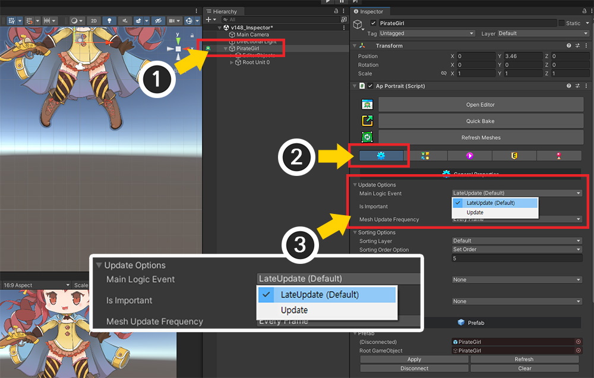
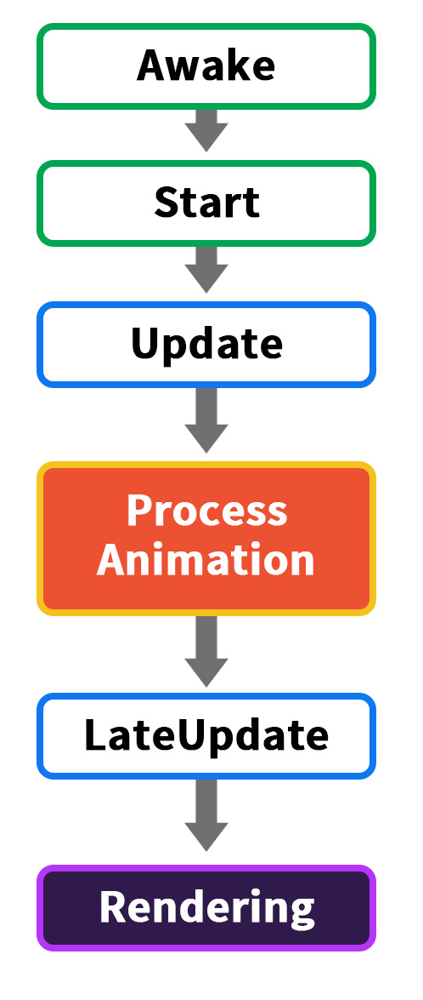

AnyPortrait > マニュアル > メインロジックイベント
メインロジックイベント
1.4.8
Unityエンジンは、更新とレンダリングが決まった順序で処理されます。
MonoBehaviourスクリプトのイベントはそれぞれのステップを意味します。
AnyPortrait は Unity に組み込まれた機能ではないため、「アニメーションが処理される順序」では正確に更新されませんが、できるだけ類似した時点で更新されるように開発されました。
（Unityエンジンのイベント実行順序）
ただし、ユーザーが作成したスクリプトや他のアセットの特性によっては、AnyPortraitの更新時点を変更する必要があるかもしれません。
「AnyPortrait v1.4.8」で追加された「Main Logic Event」オプションを使用して、アニメーションとメッシュが更新されるタイミングを変更できます。
メインロジックが呼び出されるイベントの設定

(1) 「Bakeダイアログ」を開きます。
(2) 「Setting」タブを選択します。
(3) 「Main Logic Event」の値を変更することで、メインロジックが更新されるイベントを設定できます。
オプションの値はそれぞれ次のとおりです。
- LateUpdate：「MonoBehaviour」の「LateUpdate」イベントでメインロジックが実行されます。 デフォルトです。
- Update：「MonoBehaviour」の「Update」イベントでメインロジックが実行されます。

このオプションは「Inspector」でも変更できます。
(1) UnityシーンでAnyPortraitキャラクターを選択します。
(2) 基本設定タブを選択します。
(3) 「Main Logic Event」オプションを設定できます。
メインロジック呼び出し時について
メインロジックがいつ呼び出されるかは、敏感な問題かもしれません。
ゲームの各モジュールがゆるい関係で動作している場合、このオプションはそれほど重要ではないかもしれません。
ただし、ゲームの1フレーム中に各モジュールが処理される順序が重要な場合、スクリプトが呼び出される順序は非常に重要になります。
たとえば、キャラクターに従うカメラの更新関数は、キャラクターロジックが処理された後に呼び出す必要があります。
アニメの場合も同様です。
更新順序がクリーンアップされていない場合、アニメーションの再生要求などが正しく処理されない可能性があります。
したがって、一般的なスクリプトの処理順序とアニメーションの処理順序は明らかに一貫した規則を持っている必要があります。

アニメーションに関して Unity のイベント呼び出し順序をまとめた図です。
初期化に対応する「Awake」と「Start」を通過し、「Update」イベントが呼び出されます。
その後、「Process Animation」が実行されます。
最後に「LateUpdate」が呼び出されてから「Rendering」になると、1サイクルが完了します。
スクリプトの更新とアニメーションの処理ステップが分離されているため、エラーなく動作できるのです。

AnyPortraitはUnity組み込み機能ではないため、対応する処理方式をそのまま利用することはできません。
しかし、できるだけユニティのアニメーション処理シーケンスと同様に動作するように、上記のようにメインロジックが実行されるように開発を行ったのです。
実際、AnyPortraitのメインロジックはデフォルトで「LateUpdate」で処理されます。
ユーザーは主に「Update」にロジックを書くので、これはUnityの処理順序とかなり似ています。
ただし、上の図に示すように、「LateUpdate」内で他のスクリプトとのエラーが発生する可能性があるという点はこの方式の制限です。
（実行手順による問題と解決方法は、関連ページで確認してください。）
この基本的な構造は一般的にうまく機能しますが、スクリプトの実行順序を洗練して設計して開発する人には、もう少し柔軟なオプションを提供する必要があります。

「Main Logic Event」オプションの値を「Update」に変更したときの呼び出し順序です。
AnyPortraitのメインロジックは他のスクリプトと同様に「Update」で処理されます。
この方法を使用すると、「LateUpdate」でより複雑な処理を少し簡単に実装できます。
アニメーションイベントコールバックを迅速なタイミングで受け取ることができるのも利点です。
しかし、「Update」内では、他のスクリプトや呼び出し順序による問題がさらに発生する可能性が高くなります。
少なくとも、「アニメーションの再生を要求する」スクリプトは、AnyPortraitのメインロジックではなく、無条件に最初に実行する必要があります。
したがって、この方法を使用する場合は、スクリプトの実行順序を以下の説明を必ず確認してください。
「Update」イベントでメインロジックを実行するように設定する場合

(1) 「Main Logic Event」の値を「Update」に変更します。
(2) 「Project Settings」を開きます。
(3) 「Script Execution Order」メニューを選択します。
(4) 「AnyPortrait.apPortrait」が 「Default Time」より後で呼び出されるように設定します。 実行される順序が重要な他のスクリプトやアセットがある場合は、よく考慮して実行順序を設定する必要があります。